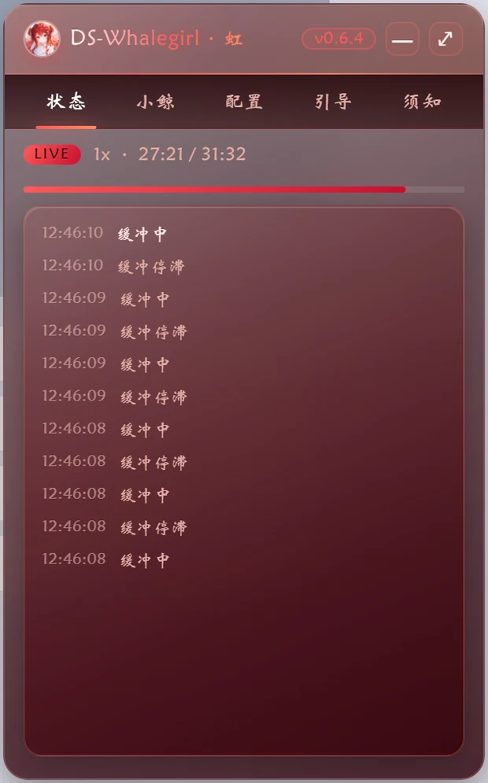
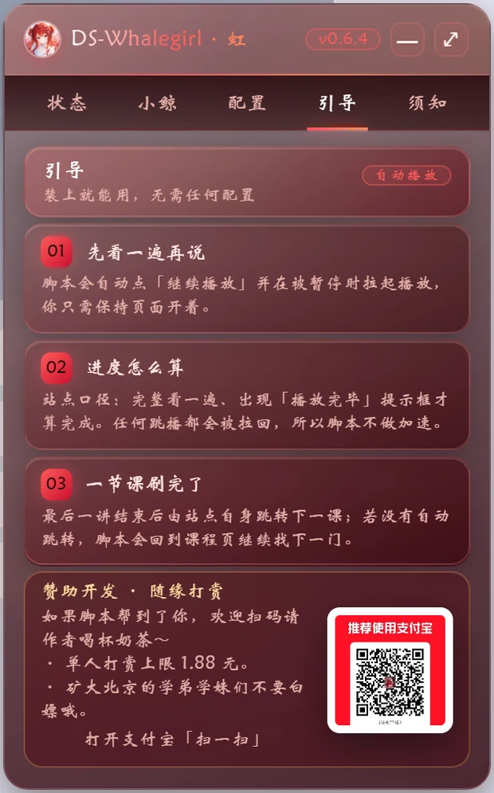
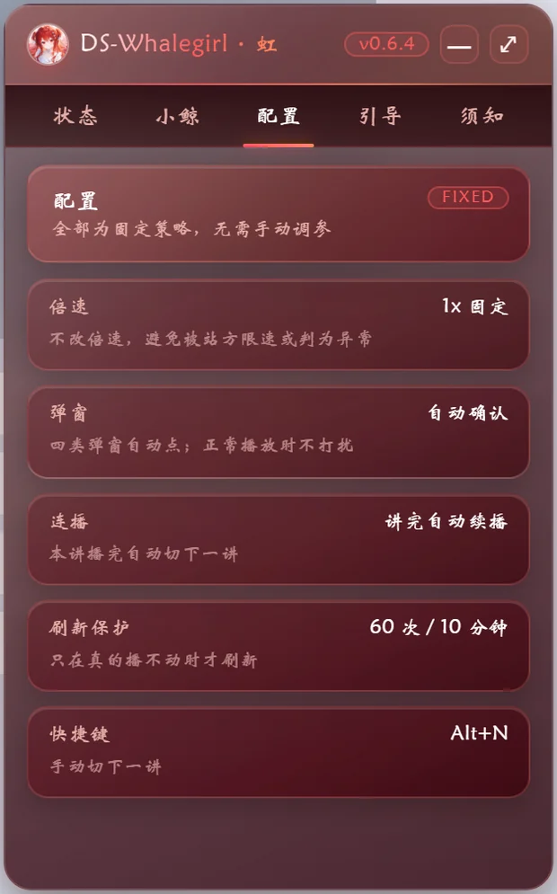
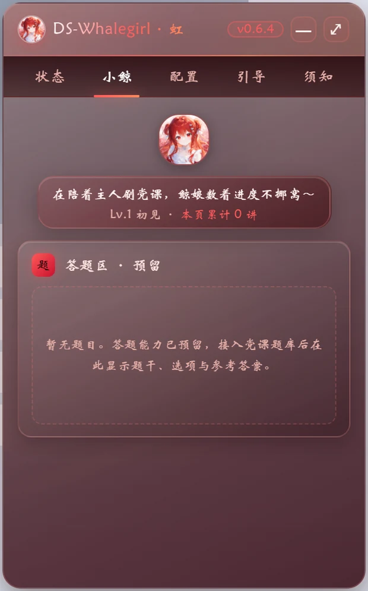
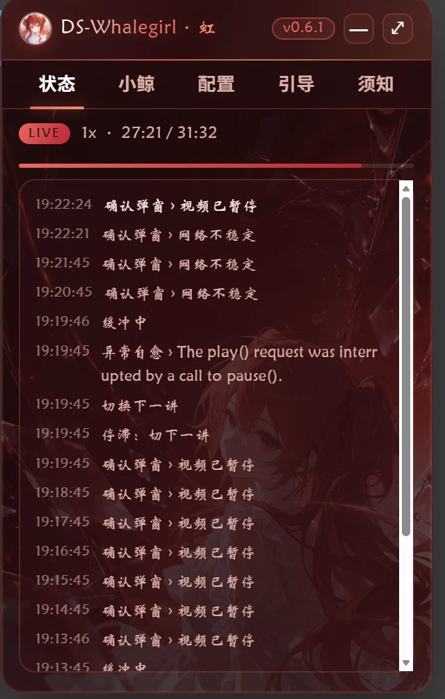

01
弹窗自理
「视频已暂停」「网络不稳定」这类确认框自动点掉，同类弹窗 12 次后停手，不会空转死循环。

四件事，全部围绕「别中断」：站点只认完整播放，任何跳转都会被拉回，所以脚本不做加速，只保证播放不被打断。
「视频已暂停」「网络不稳定」这类确认框自动点掉，同类弹窗 12 次后停手，不会空转死循环。
播放被打断即时重绑句柄并重新 play()；失败计数到阈值就整页刷新一次，回来继续。
一讲结束直接整页导航到下一讲，脚本在新页面重新注入；面板被重绘删掉时即时补挂。
恒为 1.0x，每 2 秒校准一次；后台标签不误判暂停，切回前台自动续。
同类弹窗 12 次停手 · 停滞三级处理
不需要配置项。装好、打开、放着，剩下的交给脚本。
浏览器装 ScriptCat（或 Tampermonkey），打开 脚本地址 点「安装」。
进任意一讲（地址含 /training/videoDetails/），右下角出现面板即生效。
不用点。脚本自己确认弹窗、自己续播、自己进下一讲；课程跑完自动回列表找下一门。
Alt+N 可手动切下一讲。液态玻璃按正版配方取值：内描边 --rim、斜向亮面 --tint-hi、双层投影 --shadow-hi，红族映射。





四件事先说清楚，免得装了之后有落差。
站点会回拉进度并判定无效，拖进度条、跳片尾都试过，做不通，脚本也不做。
只推进视频播放；答题、测试、提交环节一概不碰，也不代写。
脚本跑在你已登录的页面里，登录、验证码仍由你自己完成。
选择器按当前页面写死；站点大改版需要一次适配更新，更新源见下。
脚本自带更新源，装上后可在脚本管理器里「检查更新」。
https://dream-architect1026.github.io/ds-whalegirl-hong/zhdj-shuavideo.user.jszhdj.cumtb.edu.cn · /training/videoDetails/ 与 /training-m/video-detailDeveloped by X.H
DS-Whalegirl·虹 v0.6.4 · MIT License